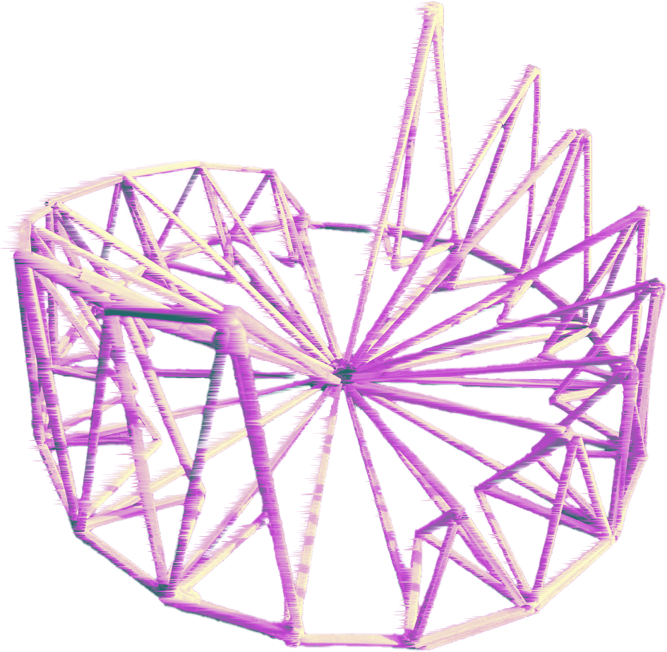
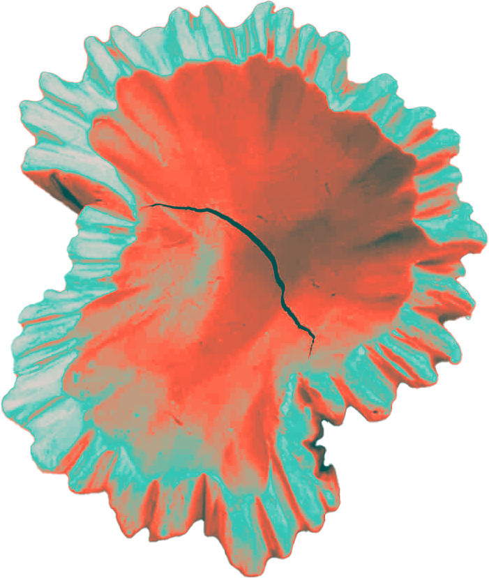
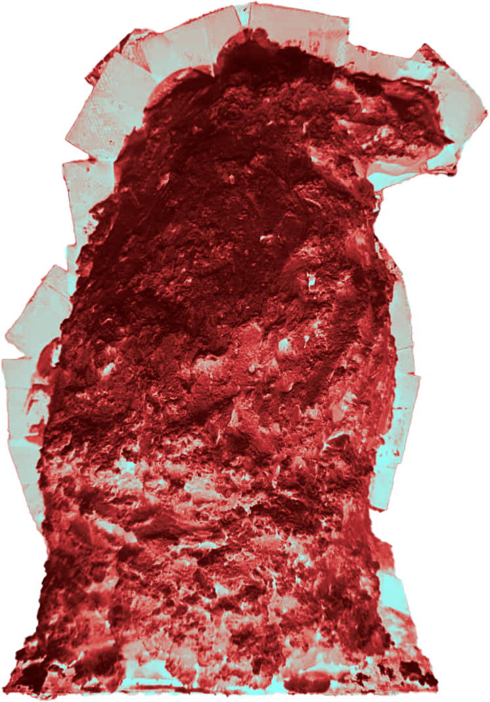
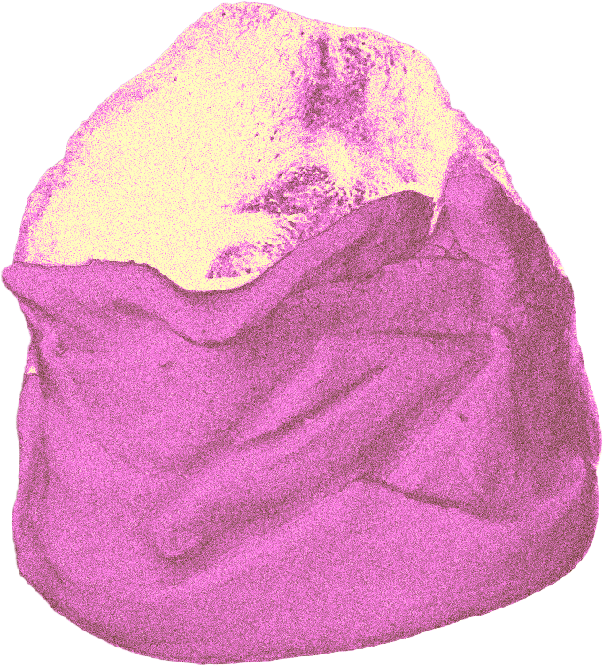
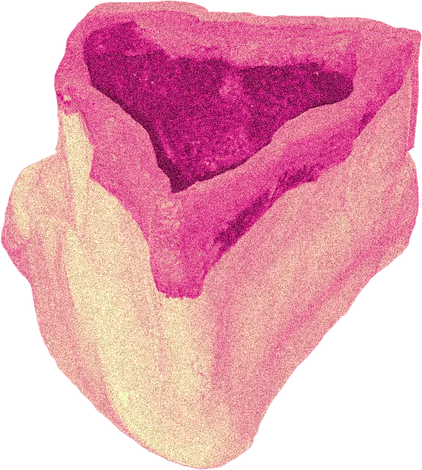
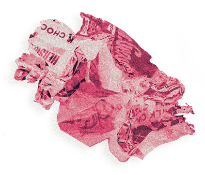
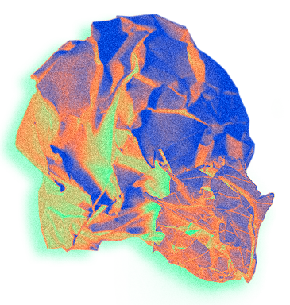

주문 안 하신
쓰레기 나왔습니다!









"주문 안 하신 쓰레기 나왔습니다!"
우리는 늘상 아무도 주문한 적 없는 무언가들을 만들어냅니다.
본래 그 누구도 원한 적 없었으나 만드는 이의 정성이 들어간 작품들.
이런 것들이 빚어지기까지 수 차례의 작업, 그리고 그 과정에서 나오는 단맛과 쓴맛이 존재합니다.
그러나...이 고충을 누가 알아 줄까요?
과정은 고사하고 결과물조차 제대로 조명받기 어렵습니다.
실용성이 없다는 이유로 '쓰레기' 라고까지 불리는 걸요!
하지만 이곳에서만큼은, 그들은 그야말로 메인 컨텐츠로서 조명받습니다.
저희는 이런 '쓰레기'들과 그를 빚어내기까지의 모든 과정을 한데 모은 코스요리로 만들어 제공합니다.
하나하나 곱씹으며 즐겨 주시면 되겠습니다.